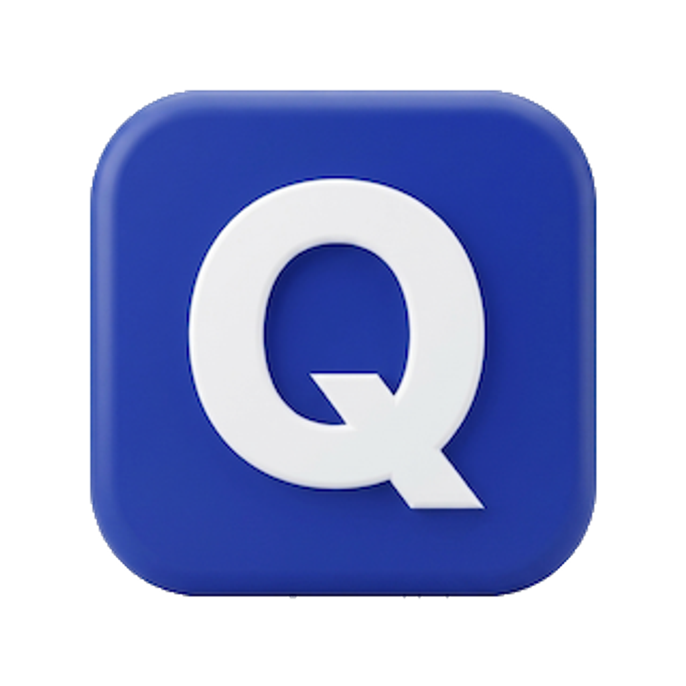

AI 실험 보고서 생성기 · 데스크톱 앱
M1 이후 맥(2020년 말~)이면 이 버튼. Intel 맥은 아래에서 받으세요.
준비 중이에요
어떤 맥인지 모르면: 화면 왼쪽 위 메뉴 → 이 Mac에 관하여 → 칩/프로세서가 "Apple"이면 Apple Silicon, "Intel"이면 Intel.
Quilo는 아직 Apple 서명이 없어서, 처음 실행할 때 경고가 떠요. 아래처럼 한 번만 열면 다음부터는 그냥 열립니다.
Quilo는 실험 보고서 생성 웹사이트 chem-pre-lab-web.onrender.com 을 데스크톱 앱으로 만든 것이에요. 기능과 내용은 웹사이트와 100% 같고(앱이 실제로 그 사이트를 띄웁니다), 웹이 업데이트되면 앱도 자동으로 최신 상태가 됩니다. 설치가 부담되면 브라우저에서 바로 써도 똑같아요.